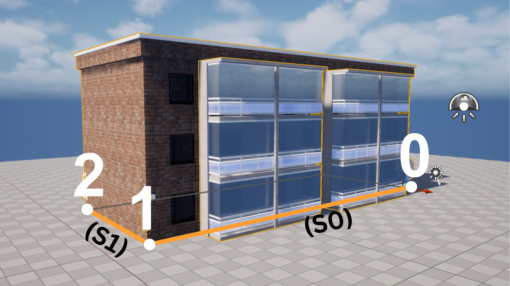
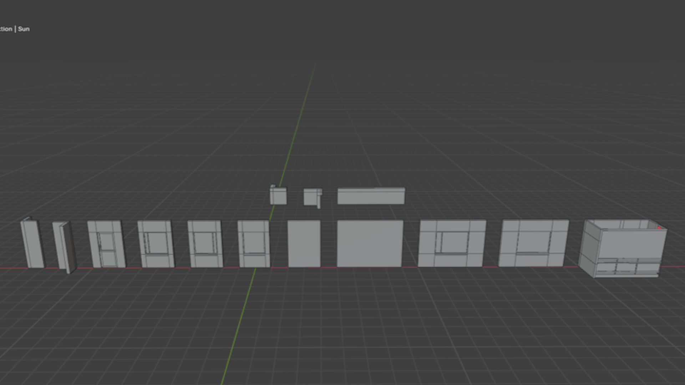
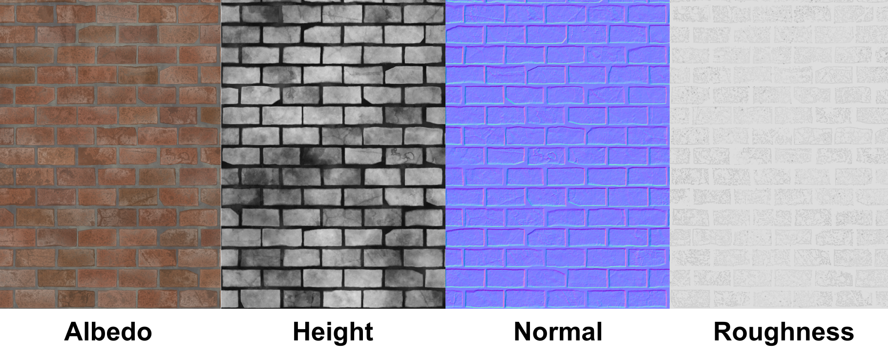

Bachelor's Thesis
Procedural building generation tool in the Unreal Engine 5 game engine
- Engine: Unreal Engine 5 (Blueprints)
- Tools: Unreal Engine 5, Blender, Adobe Substance Designer
- Project Type: Bachelor's Thesis
- Duration: 7 months

The following demonstration shows how the procedural building generation tool creates structures automatically using modular assets and spline-based placement.
Overview
This project was developed as part of my Bachelor's thesis in Game Programming at South-Eastern Finland University of Applied Sciences - Xamk. The goal was to create a procedural building generation tool in Unreal Engine 5 that enables users to generate and modify modular buildings efficiently within a virtual city environment.
The tool combines spline-based placement, modular building pieces, and a rule-based grammar system to automatically generate buildings while reducing manual content creation. The entire system was developed using Unreal Engine 5 Blueprints.
Procedural Generation
The tool generates buildings by combining modular assets along a spline. A rule-based grammar system controls the placement of different building modules, allowing users to quickly create unique building layouts while maintaining a consistent architectural style.

The image demonstrates the internal logic of the procedural generation system. Each spline point is assigned an index, which defines the order of the building segments. The segments between the points are controlled by grammar rules that determine which modular assets are placed during generation.
Modular Assets
All building modules were modeled in Blender specifically for this project. The modular workflow allows different wall, door and window pieces to be reused across multiple buildings.

Texture Creation
A brick texture was created in Adobe Substance Designer for the modular building assets. The texture workflow included creating Albedo, Normal, Height, and Roughness maps to define the surface details and appearance of the brick material.
